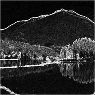

ตรวจจับขอบ

เส้นสว่างบริเวณที่ภาพเปลี่ยน และมืดในส่วนอื่น
การตั้งค่า
| การตั้งค่า | ประเภท | ช่วงค่า | ค่าเริ่มต้น |
|---|---|---|---|
| ความแรง | ตัวเลข | 0 ถึง 20 | 2 |

เส้นสว่างบริเวณที่ภาพเปลี่ยน และมืดในส่วนอื่น
| การตั้งค่า | ประเภท | ช่วงค่า | ค่าเริ่มต้น |
|---|---|---|---|
| ความแรง | ตัวเลข | 0 ถึง 20 | 2 |